Glossary
Avoidance Areas
For some of the connectivity metrics (e.g. Focus Area Donors), it is important to consider ‘focus areas’ for which connectivity should be considered. Examples of such focus areas are existing protected areas, critical habitat for endangered species, and/or otherwise important habitats for connectivity (e.g. nursery grounds, genetically unique and potentially adaptively advantageous populations). Marxan Connect assumes that the planning units within the focus areas will otherwise be protected. Loading focus areas into Marxan Connect allows users to set conservation targets for other areas that complement focus areas, or to “lock-in” (fixed in the final reserve) the planning units which are overlap the focus area.
Conservation Feature
Marxan Connect can calculate various network metrics (e.g. centrality) and several metapopulation-like measures (e.g., out-flow), which can be used as conservation features in Marxan.
It should be noted that both of approaches of incorporating connectivity into Marxan (as conservation features or as an Ecological Distance as a Boundary Definition) can be used alone or in combination. In all cases, an appropriate level of sensitivity testing should be completed to help with interpretation and communication of outcomes.
In-Degree
Definition: In-degree indicates the number of connections coming into each planning unit (Minor and Urban 2007). This metric ignores edge weights or strengths, and can be calculated from \({F}\), \({M}\), and \({P}\) .
Possible Objectives: Prioritize planning units which receive input from a larger number of other planning units. The recipient planning units with a high In-degree may have higher genetic diversity (Almany et al. 2009; Munguía-Vega et al. 2015), species diversity (ref) and population resilience through greater rescue potential (ref) as a result of the high in number of incoming connections. However, planning units with high In-degree may be susceptible to outbreaks and invasive species (e.g. Hock et al. 2014)
Equation: The in degree of a planning unit \({v}\) (\({ID(v)}\)) in a graph \({G:=(V,E)}\) with \({V}\) vertices (i.e. planning units) and \({E}\) edges (i.e. connections).
\[{\displaystyle ID(v) = deg^{-}(v)}\]
where \({deg^{-}(v)}\) is the number if inward pointing \({E}\) for planning unit \({v}\).
Illustration
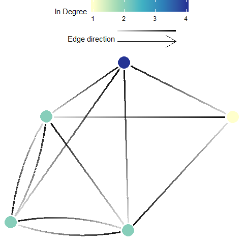
Out-Degree
Definition: Out degree indicates the number of connections originating from each planning unit (Minor and Urban 2007). This metric ignores edge weights or strengths, and can be calculated from \({F}\), \({M}\), and \({P}\).
Possible Objectives: Prioritize for planning units which have a high number of connections going out to other planning units. Out-degree is often seen as a proxy for ‘influence’, where a high out-degree signifies a larger influence on many other units. Units with an extremely high out-degree are considered hubs and may have a influence on local and network-wide dynamics.
Equation: The in degree of a planning unit \({v}\) (\({OD(v)}\)) in a graph \({G:=(V,E)}\) with \({V}\) vertices (i.e. planning units) and \({E}\) edges (i.e. connections).
\[{\displaystyle OD(v) = deg^{+}(v)}\]
where \({deg^{+}(v)}\) is the number of outward pointing \({E}\) for planning unit \({v}\).
Illustration
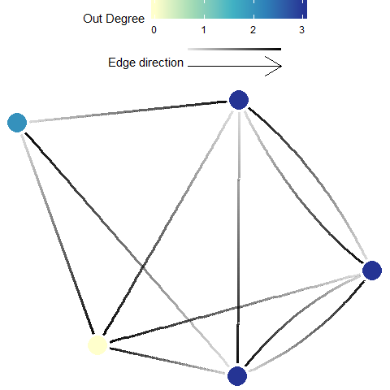
Betweenness Centrality
Definition: Betweenness centrality is a measure of the relative number of all shortest paths across a network (i.e., between all possible pairs of planning units) that pass through the focal planning unit (Minor and Urban 2007). Here, every edge (i.e. connection), irrespective of strength, is given a length of 1. This metric ignores edge weights or strengths, and can be calculated from \({F}\), \({M}\), and \({P}\).
Possible Objectives: Prioritize planning units which may act as important stepping stones among other planning units (those that have a high betweenness centrality).
Equation: The betweenness centrality of a planning unit \({v}\) (\({BC(v)}\)) in a graph \({G:=(V,E)}\) with \({V}\) vertices (i.e. planning units) and \({E}\) edges (i.e. connections) is
\[\displaystyle {BC(v)= \sum_{s \ne v \ne t \in V}\frac{{\sigma_{st}(v)}}{\sigma_{st}}}\]
where \({\sigma _{st}}\) is total number of shortest paths from planning unit \({s}\) to planning unit \({t}\) and \({\sigma _{st}(v)}\) is the number of those paths that pass through \({v}\).
Illustration
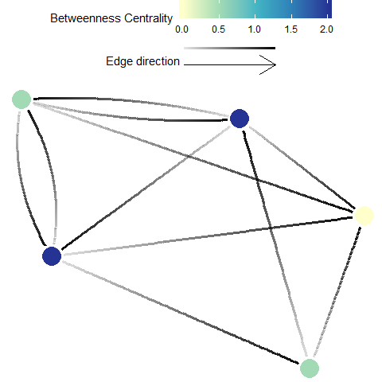
Eigenvector Centrality
Definition: Eigenvector centrality indicates the influence (considers number of connections and their weight) that a planning unit has on the network (D’Aloia et al. 2017). This metric requires appropriate edge weights or strengths, and should only be calculated from a properly structured migration matrix, \({M}\). Eigenvector centrality is functionally similar to Google PageRank, but Eigenvector centrality is limited by the required matrix and the algorithm used to calculate it may not perform well with sparsely connected network.
Possible Objectives: Prioritize planning units which are important to maintaining or influencing connectivity dynamics across the whole planning area (i.e. study extent).
Equation: The Eigenvector centrality of a planning unit \({v}\) (\({EVC(v)}\)) in a graph \({G:=(V,E)}\) with \({V}\) vertices (i.e. planning units) and \({E}\) edges (i.e. connections), let \({C=(c_{v,t})}\) be the connectivity (migration) matrix
\[{\displaystyle EVC(v) = \frac{1}{\lambda} \sum_{t \in G} c_{v,t}}\]
where \({\lambda }\) is the leading eigenvalue.
Illustration
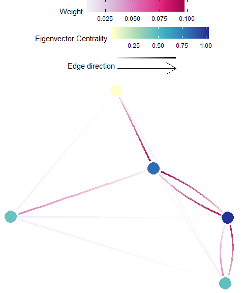
Google PageRank
Definition: PageRank uses the number and quality (weight) of connections associated with a planning unit, to estimate the importance of the planning unit. PageRank is functionally similar to Eigenvector Centrality, and is recommended for well connected planning areas. Appropriate matrices to be used with the PageRank algorithm include the \({F}\), \({M}\), and \({P}\).
Possible Objectives: Prioritize planning units which are important to maintaining or influencing connectivity within the whole planning area (i.e. study extent).
Equation: The weighted PageRank of a planning unit \({v}\) (\({PR(v)}\)) in a graph \({G:=(V,E)}\) with \({V}\) vertices (i.e. planning units) and \({E}\) edges (i.e. connections), let \({C=(c_{v,t})}\) be the connectivity (probability? migration?) matrix.
\[\displaystyle PR(v) = 1-d+d\sum_{v\ne t\in V}PR(t)c_{v,t}c_{t,v}\]
where \(d\) is the damping factor set to 0.85 by default.
Illustration
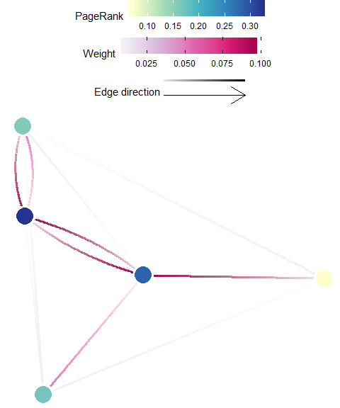
Self-Recruitment
Definition: Self-recruitment is the diagonal of the migration matrix, [M]. It is the proportion of individuals that arrived to a planning unit that originated from that same planning unit (see D’Aloia et al. 2017; Lett et al. 2015).
Possible Objectives: Prioritize planning units which are dominated by locally-produced individuals. High self-recruitment sites is often used as a proxy for isolation. A high self-recruitment value may indicate a greater degree of isolation. Note that it should be used cautiously, as high self recruitment does not equate high recruitment (e.g. a planning unit can be 100% self-recruiting when only one individual arrives, which also originated from that unit).
Equation: The self recruitment of a planning unit \({v}\) (\({SR(v)}\)) in a graph \({G:=(V,E)}\) with \({V}\) vertices (i.e. planning units) and \({E}\) edges (i.e. connections), let \({C=(c_{v,t})}\) be the connectivity (probability) matrix.
\[{\displaystyle SR(v) = \frac{c_{v,v}N_v}{\sum_{t \in V}c_{t,v}N_v}}\]
where \({N_v}\) is the number of potential recruits produced in planning unit \({t}\).
Illustration
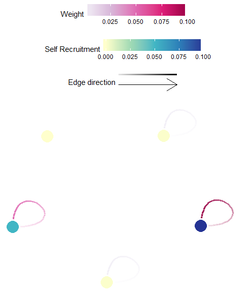
Local Retention
Definition: Local retention is the diagonal of the probability matrix, [P], and is the proportion of those individuals originating from a planning unit that are retained within that planning unit. Therefore, this value is independent of contributions from all other planning units (Lett et al. 2015).
Possible Objectives: Prioritize planning units which retain a large proportion of the individuals produced. This may be used as a proxy for the planning unit to be self-sustaining (ref ).
Equation: The local retention of a planning unit \({v}\) (\({LR(v)}\)) in a graph \({G:=(V,E)}\) with \({V}\) vertices (i.e. planning units) and \({E}\) edges (i.e. connections), let \({C=(c_{v,t})}\) be the connectivity (probability) matrix.
\[\displaystyle LR(v) = c_{v,v}\]
Illustration
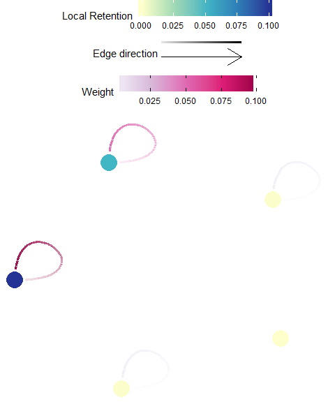
In-flow
Definition: In-flow (often mislabeled as in-flux) is the cumulative incoming individuals to a destination planning unit, without including those that originated from the unit. In-flow is the sum across all rows (sources) for each destination (column) of the Flow matrix, \({F}\), after the diagonal is removed.
Possible Objectives: Prioritize planning units which receives larger amounts of individuals from other planning units.
Equation: The inflow of a planning unit \({v}\) (\({IF(v)}\)) in a graph \({G:=(V,E)}\) with \({V}\) vertices (i.e. planning units) and \({E}\) edges (i.e. connections), let \({C=(c_{v,t})}\) be the connectivity (probability) matrix.
\[{\displaystyle IF(v) = \sum_{t \ne v \in V}c_{t,v}N_t}\]
where \({N_t}\) is the number of potential recruits produced in planning unit \({t}\).
Illustration
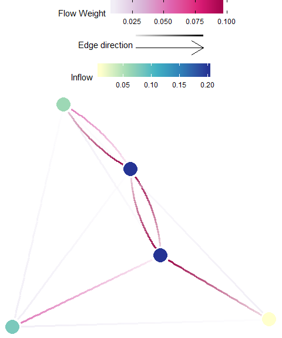
Out-flow
Definition: Out-flow (often mislabeled as out-flux) is the cumulative amount of outgoing individuals from a source planning unit that arrive at some destination. Out-flux is the sum across all columns (destinations) for each source (row) of the Flow matrix, \({F}\), after the diagonal is removed.
Possible Objectives: Prioritize planning units which subsidize other planning units (e.g. maximize spillover).
Equation: The inflow of a planning unit \({v}\) (\({OF(v)}\)) in a graph \({G:=(V,E)}\) with \({V}\) vertices (i.e. planning units) and \({E}\) edges (i.e. connections), let \({C=(c_{v,t})}\) be the connectivity (probability) matrix.
\[{\displaystyle OF(v) = \sum_{t \ne v \in V}c_{v,t}N_v}\]
where \({N_v}\) is the number of potential recruits produced in planning unit \({v}\).
Illustration
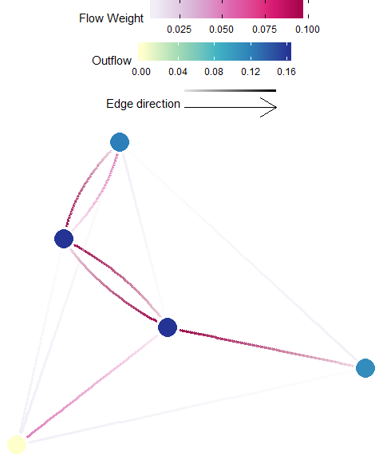
Temporal Connectivity Covariance
Warning: This metric is still experimental ‘beta’ phase, use at your own risk!
Definition: Temporal connectivity covariance indicates the temporal complementarity (i.e. negative covariance) of connections from a planning unit to the focus areas to existing connections within the focus area (Watson et al. 2012).
The option to calculate it is only available if a connectivity ‘List with Time’ was provided under Demographic Input in the Connectivity Input tab, and a focus area shapefile was provided under the Spatial Input tab.
Possible Objectives: Prioritize planning units which increase focus area metapopulation growth and stability.
Equation: The temporal connectivity covariance of a planning unit \({v}\) (\({TCC(v)}\)) in a graph \({G:=(V,E)}\) with \({V}\) vertices (i.e. planning units) and \({E}\) edges (i.e. connections), let \({A=(a_{v,t})}\) be the adjacency matrix
\[{\displaystyle TCC(v) = -\sum_{i \in E_{v,FA}} \sum_{j \in E_{FA,FA}}Cov(E_i,E_j)}\]
where \({E_{FA,FA}}\) are the \({E}\) that link 2 planning units, both of which spatially overlap with the focus area, \({E_{v,FA}}\) are the \({E}\) that originate in \({v}\) and end in a planning unit which spatially overlaps with the focus area, and \({Cov()}\) is the temporal covariance.
Illustration

Focus Area Recipients
Definition: A “focus area” may represent an existing protected areas, critical habitat for endangered species, and/or otherwise important habitats for connectivity (e.g. nursery grounds, genetically unique and potentially adaptively advantageous populations). In these cases, one might wish to target planning units that significantly benefit by receiving individuals from these focus areas – these planning units are considered significant recipients. The focus area recipients metric is the sum of all individuals received by a planning unit that is from a focus area. This is calculated by taking the sum across all donor focus areas (rows) for each recipient planning unit (column) of an appropriate flow matrix \({F}\) or migration matrix \({M}\).
Possible Objectives: Prioritize planning units which are subsidized by the focus area (e.g. fully protected reserves).
Equation: The focus area recipients of a planning unit \({v}\) (\({FAR(v)}\)) in a graph \({G:=(V,E)}\) with \({V}\) vertices (i.e. planning units) and \({E}\) edges (i.e. connections), let \({C=(c_{v,t})}\) be the connectivity (probability) matrix.
\[{\displaystyle FAR(v) = \sum_{t \ne v \in V(FA)}c_{t,v}N_t}\]
where \({N_t}\) is the amount of GONE produced in planning unit \({t}\) and \({V(FA)}\) are the \({V}\) which spatially overlap with the focus area.
Illustration
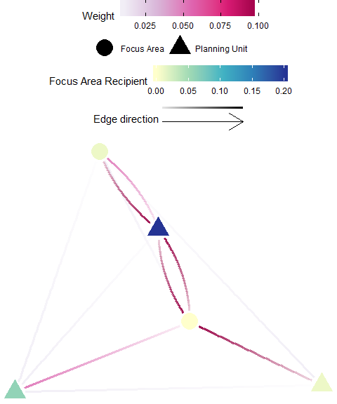
Focus Area Donors
Definition: A “focus area” may represent an existing protected areas, critical habitat for endangered species, and/or otherwise important habitats for connectivity (e.g. nursery grounds, genetically unique and potentially adaptively advantageous populations). In these cases, one might wish to target planning units that significantly contribute individuals to these focus areas – these planning units are considered significant donors. The focus area donors metric is the sum of all individuals originating from a planning unit that is received by a focus area. This is calculated by taking the sum across all recipient focus areas (columns) for each donor (row) of an appropriate flow matrix \({F}\).
Possible Objectives: Prioritize planning units which subsidize the focus area (e.g. protect demographic sources to existing protected areas).
Equation: The focus area donors of a planning unit \({v}\) (\({FAD(v)}\)) in a graph \({G:=(V,E)}\) with \({V}\) vertices (i.e. planning units) and \({E}\) edges (i.e. connections), let \({C=(c_{v,t})}\) be the connectivity (probability) matrix.
\[{\displaystyle FAD(v) = \sum_{t \ne v \in V(FA)}c_{v,t}N_v}\]
where \({N_v}\) is the amount of GONE produced in planning unit \({v}\) and \({V(FA)}\) are the \({V}\) which spatially overlap with the focus area.
Illustration
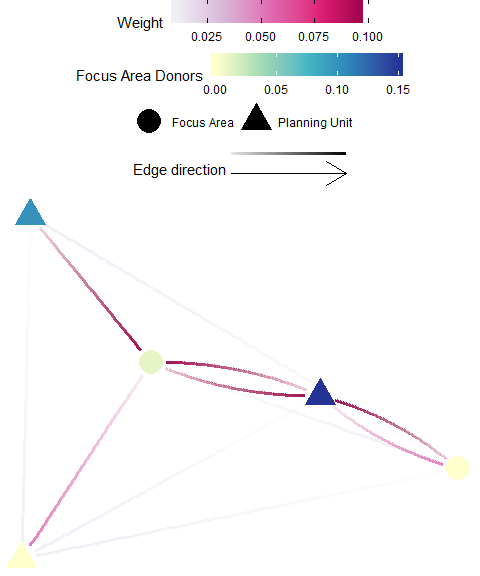
Avoidance Area Recipients
Definition: An “avoidance area” may represent an area heavily infested or more likely to be invaded by invasive species (e.g. international shipping ports), or areas that are potential sources of pollutants (e.g. oil extraction, river outflows). In these cases, one might wish to target planning units that receive fewer individuals from these avoidance areas – these planning units are considered significant recipients. The focus area recipients metric is the sum of all individuals received by a planning unit that is from a focus area. This is calculated by taking the sum across all donor focus areas (rows) for each recipient planning unit (column) of an appropriate flow matrix \({F}\) or migration matrix \({M}\). Warning: This metric should be discretized since scoring low on this metric is desired.
Possible Objectives: Prioritize planning units which are least subsidized by the avoidance area (e.g. avoid connectivity for invasive species hot-spots).
Equation: The avoidance area recipients of a planning unit \({v}\) (\({AAR(v)}\)) in a graph \({G:=(V,E)}\) with \({V}\) vertices (i.e. planning units) and \({E}\) edges (i.e. connections), let \({C=(c_{v,t})}\) be the connectivity (probability) matrix.
\[{\displaystyle AAR(v) = \sum_{t \ne v \in V(AA)}c_{t,v}N_t}\]
where \({N_t}\) is the amount of GONE produced in planning unit \({t}\) and \({V(AA)}\) are the \({V}\) which spatially overlap with the avoidance area.
Illustration
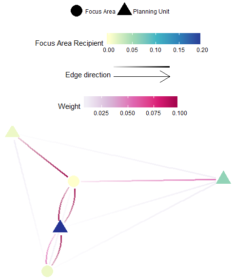
Avoidance Area Donors
Definition: An “avoidance area” may represent an area heavily infested or more likely to be invaded by invasive species (e.g. international shipping ports), or areas that are potential sources of pollutants (e.g. oil extraction, river outflows). In these cases, one might wish to target planning units that significantly contribute individuals to these avoidance areas – these planning units are considered significant donors. The avoidance area donors metric is the sum of all individuals originating from a planning unit that is received by an avoidance area. This is calculated by taking the sum across all recipient focus areas (columns) for each donor (row) of an appropriate flow matrix \({F}\).
Possible Objectives: Prioritize planning units which subsidize the avoidance area (e.g. increase resilience for impacted zones).
Equation: The avoidance area donors of a planning unit \({v}\) (\({FAD(v)}\)) in a graph \({G:=(V,E)}\) with \({V}\) vertices (i.e. planning units) and \({E}\) edges (i.e. connections), let \({C=(c_{v,t})}\) be the connectivity (probability) matrix.
\[{\displaystyle AAD(v) = \sum_{t \ne v \in V(AA)}c_{v,t}N_v}\]
where \({N_v}\) is the amount of GONE produced in planning unit \({v}\) and \({V(FA)}\) are the \({V}\) which spatially overlap with the avoidance area.
Illustration
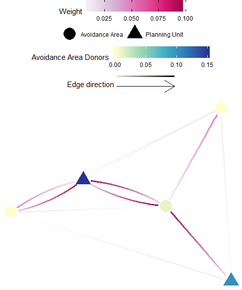
Data Formats
“Connectivity”" means very different things in different ecological and conservation contexts. Although there is no standard in how these data should be incorporated into the conservation planning process, Marxan Connect has the flexibility to accept different formats of connectivity data to accommodate a broad suite of situations. As with any model, great care should be taken in developing and using these data.
Typically, the values in a connectivity matrix represents the movement of individuals between planning units or some likelihood of movement, but values could also represent geographic distance, gene flow, mass transfer (e.g., of carbon), nutrients, energy, etc. Care should be taken into ensuring the data used are appropriate for the analyses performed within Marxan Connect.
Connectivity Matrix
The connectivity matrix is how we refer to the generic data structure where donor (or source) sites are rows and the recipient (or destination) sites are the columns. Donor IDs are shown in the first column (i.e. unique for each source site) and the recipient site IDs in the first row (i.e.,* unique for each destination ). Note, most Marxan Connect requires that the source sites and the destination sites are exactly the same (forming a square matrix), match the ID’s of the planning units, and arranged in the same order.
| 1 | 2 | 3 | 4 | … | |
|---|---|---|---|---|---|
| 1 | 0.1 | 0.02 | 0.005 | 0.01 | … |
| 2 | 0.006 | 0.2 | 0.007 | 0.009 | … |
| 3 | 0.01 | 0.003 | 0.25 | 0.02 | … |
| 4 | 0.022 | 0.017 | 0.001 | 0.2 | … |
| … | … | … | … | … | … |
The elements (i.e. cells) contain information about the connectivity between donor/recipient sites, but their values depend on the type of connectivity matrix being used (e.g. Probability, Migration, or Flow).
Edge List
The value column is an alternative (yet equivalent) representation of the connectivity matrix. For sparse matrices, this may be a much more efficient data structure. The first column contains the donor site IDs, the second column contains the recipient site IDs, and the third column contains the connectivity value. In this representation, each non-zero element of the connectivity matrix is represented by a row.
| id1 | id2 | value |
|---|---|---|
| 1 | 1 | 0.1 |
| 1 | 2 | 0.02 |
| 1 | 3 | 0.005 |
| 1 | 4 | 0.01 |
| … | … | … |
The value column contain information about the connectivity between donor/recipient sites, but their values depend on the type of connectivity matrix being used (e.g. Probability, Migration, or Flow).
Edge List with Time
Here, the Edge List structure from above is duplicated for each unique time-step. The first column now contains the time-step ID , The remaining columns are exactly as Edge List, above (donor site ID, recipient site ID, and connectivity value).
| time | id1 | id2 | value |
|---|---|---|---|
| 1 | 1 | 1 | 0.1 |
| 1 | 1 | 2 | 0.02 |
| 1 | 1 | 3 | 0.005 |
| 1 | 1 | 4 | 0.01 |
| … | … | … | … |
The elements (i.e. cells) contain information about the connectivity between donor/recipient sites, but their values depend on the type of connectivity matrix being used (e.g. Probability, Migration, or Flow).
Edge List with Type
Here, the Edge List structure from above is duplicated for each unique type (e.g. species, or dispersal trait). The first column now contains the type ID, The remaining columns are exactly as Edge List, above (donor site ID, recipient site ID, and connectivity value).
| Type | id1 | id2 | value |
|---|---|---|---|
| 1 | 1 | 1 | 0.1 |
| 1 | 1 | 2 | 0.02 |
| 1 | 1 | 3 | 0.005 |
| 1 | 1 | 4 | 0.01 |
| … | … | … | … |
The elements (i.e. cells) contain information about the connectivity between donor/recipient sites, but their values depend on the type of connectivity matrix being used (e.g. Probability, Migration, or Flow).
Data Types
Marxan Connect can accept different types of common connectivity data:
Flow
The data in the Flow matrix, \({F}\), represents the amount of movement between planning units. In the Flow matrix, we assume larger values represent greater flow, zero represents no flow, and there is no limits imposed on these values. If the sum for each row (donor) across all columns (recipient) does not equal the total amount produced from each donor planning unit (i.e. some are lost to mortality or from leaving the system), then the total produced (i.e. Local Production should to be provided for appropriate interpretation of some metrics.
Example Flow Matrix:
| 1 | 2 | 3 | 4 | … | |
|---|---|---|---|---|---|
| 1 | 1 | 2 | 5 | 1 | … |
| 2 | 6 | 2 | 7 | 9 | … |
| 3 | 1 | 3 | 3 | 2 | … |
| 4 | 22 | 17 | 3 | 2 | … |
| … | … | … | … | … | … |
Note, these data could be represented as an Edge List as well.
Migration
The Migration matrix, \({M}\), (adopted from the metapopulation modelling (Caswell 2014) and population genetic (Bodmer and Cavalli-Sforza 1968) literature), quantifies the proportion of those individuals arriving at a recipient planning unit that originated from a donor planning unit. As a result, all elements of this matrix are relative to the destination. This can be derived from a Flow matrix by dividing all elements of this matrix by their respective column sums, as a result, columns in the migration matrix sum to 1.
Example migration Matrix:
| 1 | 2 | 3 | 4 | … | |
|---|---|---|---|---|---|
| 1 | 0.1 | 0.02 | 0.005 | 0.01 | … |
| 2 | 0.006 | 0.2 | 0.007 | 0.009 | … |
| 3 | 0.01 | 0.003 | 0.25 | 0.02 | … |
| 4 | 0.022 | 0.017 | 0.001 | 0.2 | … |
| … | … | … | … | … | … |
Note, these data could be represented as an Edge List as well.
Probability
The probability matrix, \({P}\), represents the proportion of those individuals originating from a donor planning unit which arrive into a recipient planning unit. The values of this matrix are therefore relative to the amount released from the donor unit (often influenced by amount or quality of habitat in that planning unit). The rows of this matrix often sum to a value much less than one as many individuals die or are lost from the system of interest. Rows may sum to one if either all individuals that originate from a source planning unit successfully arrive to a planning unit (e.g., no mortality), or if the matrix was normalized with respect to sums across columns (often done if the user is only interested in relative strengths of connectivity and not realistic levels of connectivity), then rows will sum to 1. Either matrix is appropriate, but the assumptions need to be considered when interpreting the results.
Example Probability Matrix:
| 1 | 2 | 3 | 4 | … | |
|---|---|---|---|---|---|
| 1 | 0.1 | 0.02 | 0.005 | 0.01 | … |
| 2 | 0.006 | 0.2 | 0.007 | 0.009 | … |
| 3 | 0.01 | 0.003 | 0.25 | 0.02 | … |
| 4 | 0.022 | 0.017 | 0.001 | 0.2 | … |
| … | … | … | … | … | … |
Note, these data could be represented as an Edge List as well.
Spatial Dependency
In Marxan, the boundary definitions (i.e. boundary.dat), quantifying the shared boundary length among adjacent planning units, in conjunction with the Boundary Length Modifier (BLM), a weighting parameter to ‘tune’ the influence of the boundaries, can help achieve a solution with a reasonable edge to area ratio (i.e. minimize edge while still achieving representation targets). Typically boundaries are quantified as the length of the shared boundary between planning units. Marxan Connect allows users to use alternative boundary definitions, “Spatial Dependencies”, to incorporate connectivity data (see Beger et al. (2010)) and the BLM is then used as a Connectivity Strength Modifier. This encourages the selection of connected networks of protected areas and minimizes the effective “edge” of the entire system based on the supplied connectivity data.
Alternatively (or in conjunction), connectivity may be incorporated into the Marxan analysis by using Conservation Features, where important sites for connectivity can be targeted directly.
Connectivity as boundary
Directly substitutes the supplied connectivity data (i.e. Spatial Dependencies) for the boundary lengths in the boundary definitions file (i.e. boundary.dat; see Beger et al. (2010)). This approach assumes the user has provided appropriate connectivity data (e.g. appropriate scale, units, and rank-order).
Focus Areas
For some of the connectivity metrics (e.g. Focus Area Donors), it is important to consider ‘focus areas’ for which connectivity should be considered. Examples of such focus areas are existing protected areas, critical habitat for endangered species, and/or otherwise important habitats for connectivity (e.g. nursery grounds, genetically unique and potentially adaptively advantageous populations). Marxan Connect assumes that the planning units within the focus areas will otherwise be protected. Loading focus areas into Marxan Connect allows users to set conservation targets for other areas that complement focus areas, or to “lock-in” (fixed in the final reserve) the planning units which are overlap the focus area.
Local Production
The amount of GONE produced in each planning unit (user supplied data).
Planning area
The entire spatial domain over which the planning process is occuring. This is synonymous with terms “model domain” or “study area” in other fields. This area is typically subdivided into smaller “Planning Units”
Planning Units
Spatial sub-units of the entire planning area (i.e. domain, or study area). Can be gridded (e.g. hexagonal) or feature based (e.g. reefs) as in Marxan.
Resistance Matrix
Used to calculate isolation by resistance type connectivity matrices (e.g. McRae and Nürnberger 2006). Contains habitat or species specific values for resistance to movement through each habitat type. Home habitat IDs are in the first column and IDs for habitats through which movement may occur are in the first row.
| Sand | Boulder | Cobble | Mud | … | |
|---|---|---|---|---|---|
| Sand | 1 | 30 | 15 | 2 | … |
| Boulder | 30 | 1 | 2 | 30 | … |
| Cobble | 15 | 2 | 1 | 12 | … |
| Mud | 2 | 30 | 12 | 1 | … |
| … | … | … | … | … | … |
Shapefile
An open-source geospatial data format produced by ESRI (developers of ArcGIS), commonly read, written, and analyzed in many open source GIS platforms (e.g. QGIS) and statistical programming languages (e.g. R, Python)
References
Almany, G R, S R Connolly, D D Heath, J D Hogan, G P Jones, L J McCook, M Mills, R L Pressey, and D H Williamson. 2009. “Connectivity, Biodiversity Conservation and the Design of Marine Reserve Networks for Coral Reefs.” Coral Reefs 28 (2). Springer-Verlag: 339–51.
Beger, Maria, Simon Linke, Matt Watts, Eddie Game, Eric Treml, Ian Ball, and Hugh P Possingham. 2010. “Incorporating Asymmetric Connectivity into Spatial Decision Making for Conservation.” Conservation Letters 3 (5). Blackwell Publishing Inc: 359–68.
Bodmer, W F, and L L Cavalli-Sforza. 1968. “A Migration Matrix Model for the Study of Random Genetic Drift.” Genetics 59 (4). Genetics Soc America: 565–92.
Caswell, Hal. 2014. “Matrix Population Models.” In Wiley StatsRef: Statistics Reference Online. John Wiley & Sons, Ltd.
D’Aloia, Cassidy C, Rémi M Daigle, Isabelle M Côté, Janelle M R Curtis, Frédéric Guichard, and Marie-Josée Fortin. 2017. “A Multiple-Species Framework for Integrating Movement Processes Across Life Stages into the Design of Marine Protected Areas.” Biol. Conserv. 216 (December): 93–100.
Hock, Karlo, Nicholas H Wolff, Scott A Condie, Kenneth R N Anthony, and Peter J Mumby. 2014. “Connectivity Networks Reveal the Risks of Crown-of-Thorns Starfish Outbreaks on the Great Barrier Reef.” J. Appl. Ecol. 51 (5): 1188–96.
Lett, Christophe, Tri Nguyen-Huu, Marion Cuif, Pablo Saenz-Agudelo, and David M Kaplan. 2015. “Linking Local Retention, Self-Recruitment, and Persistence in Marine Metapopulations.” Ecology 96 (8): 2236–44.
McRae, Brad H, and B Nürnberger. 2006. “ISOLATION BY RESISTANCE.” Evolution 60 (8). The Society for the Study of Evolution: 1551–61.
Minor, Emily S, and Dean L Urban. 2007. “Graph Theory as a Proxy for Spatially Explicit Population Models in Conservation Planning.” Ecol. Appl. 17 (6): 1771–82.
Munguía-Vega, Adrián, Andrea Sáenz-Arroyo, Ashley P Greenley, Jose Antonio Espinoza-Montes, Stephen R Palumbi, Marisa Rossetto, and Fiorenza Micheli. 2015. “Marine Reserves Help Preserve Genetic Diversity After Impacts Derived from Climate Variability: Lessons from the Pink Abalone in Baja California.” Global Ecology and Conservation 4 (July): 264–76.
Watson, James R, Bruce E Kendall, David A Siegel, and Satoshi Mitarai. 2012. “Changing Seascapes, Stochastic Connectivity, and Marine Metapopulation Dynamics.” Am. Nat. 180 (1): 99–112.